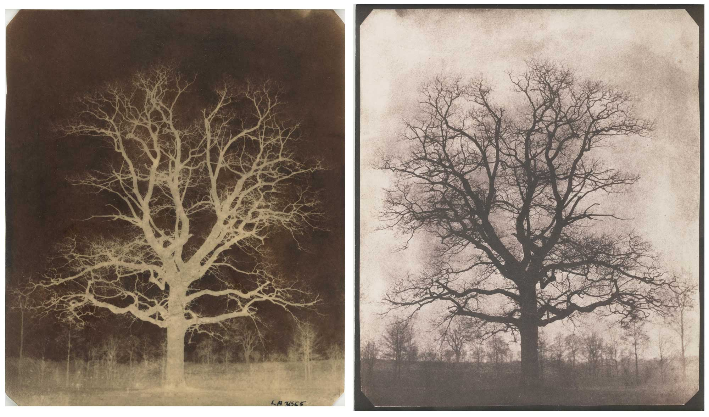

ของก็ดี ทำไมไม่มีคนใช้
#ใช้เองก็ได้เหงาๆ
#Daguerreotype ดีกว่าเรายังไง
#ภาพกลับสีแต่ก็สวยดีนะเออ
#Calotypeแปลว่าความประทับใจในภาพที่สวยงาม



ได้ค้นพบกระบวนการถ่ายภาพด้วย Calotype Process
เป็นกระบวนการถ่ายภาพโดยใช้กระดาษเคลือบ Silver Iodide
เมื่อถ่ายแล้วจะได้ภาพกลับสีต้องนำไปล้างด้วยน้ำยาสร้างภาพจึงจะได้ภาพสีเสมือน
กระบวนการ Calotype ดีกว่า Daguerreotype ตรงที่สามารถทำซ้ำได้
ของก็ดี ทำไมไม่มีคนใช้
#ใช้เองก็ได้เหงาๆ
#Daguerreotype ดีกว่าเรายังไง
#ภาพกลับสีแต่ก็สวยดีนะเออ
#Calotypeแปลว่าความประทับใจในภาพที่สวยงาม

ทดสอบ ทดสอบ ทดสอบ ทดสอบ
ทดสอบ ทดสอบ ทดสอบ ทดสอบ
ทดสอบ ทดสอบ ทดสอบ ทดสอบ
ทดสอบ ทดสอบ ทดสอบ ทดสอบ
ทดสอบ ทดสอบ ทดสอบ
#HistoryOfSci


ลองลงรูปในคอมเม้น
ลองลงรูปในคอมเม้น